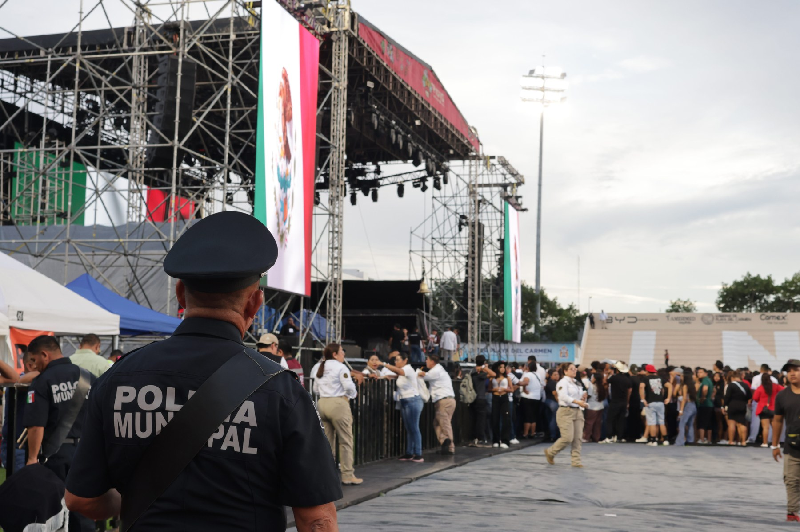
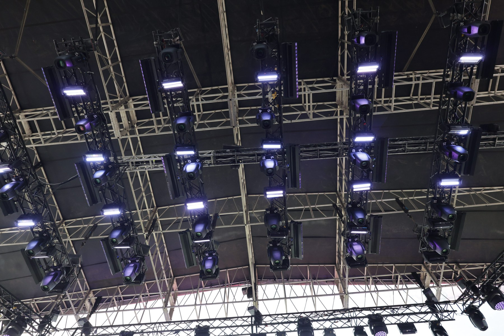
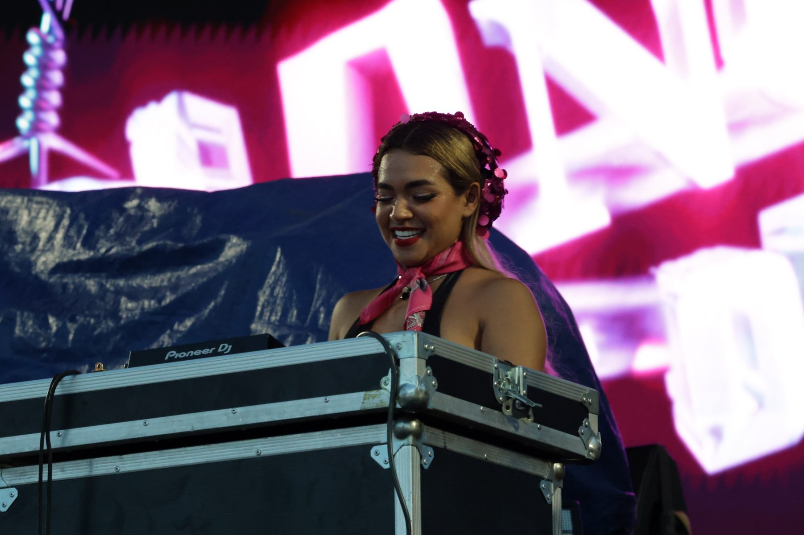
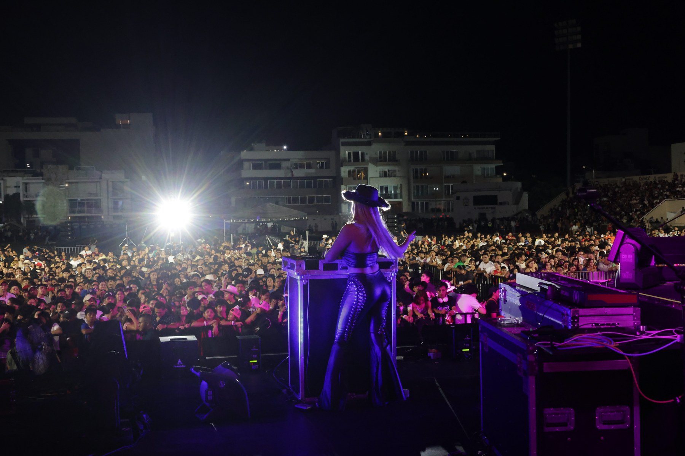
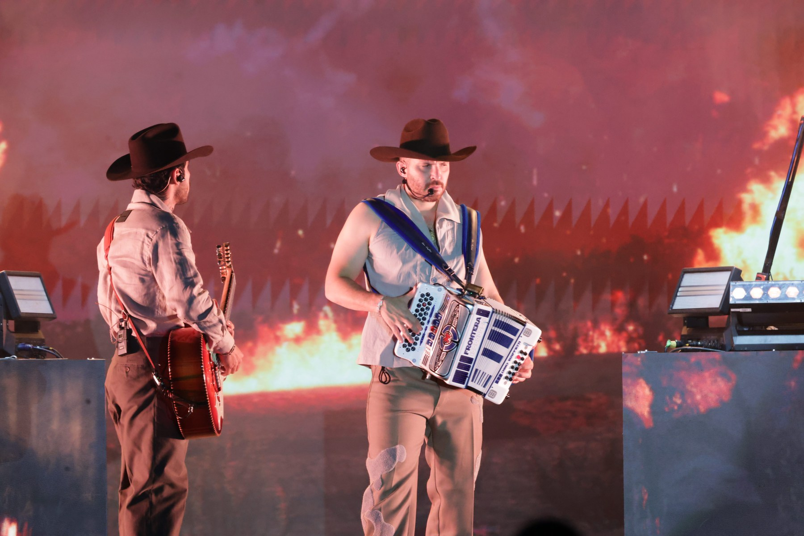
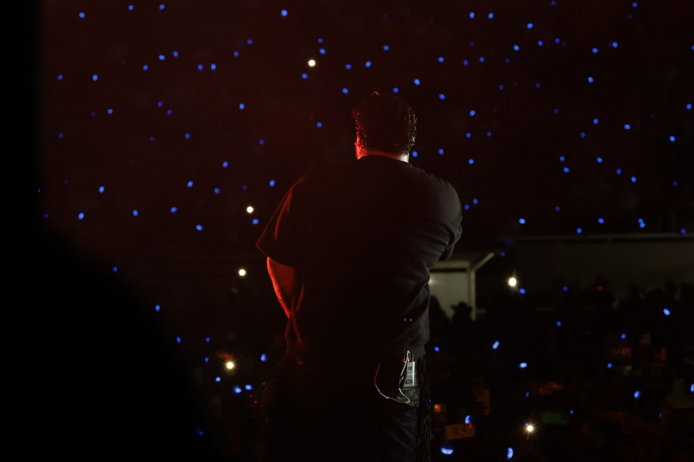
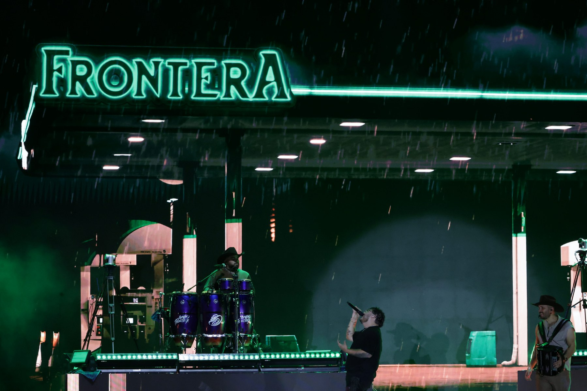
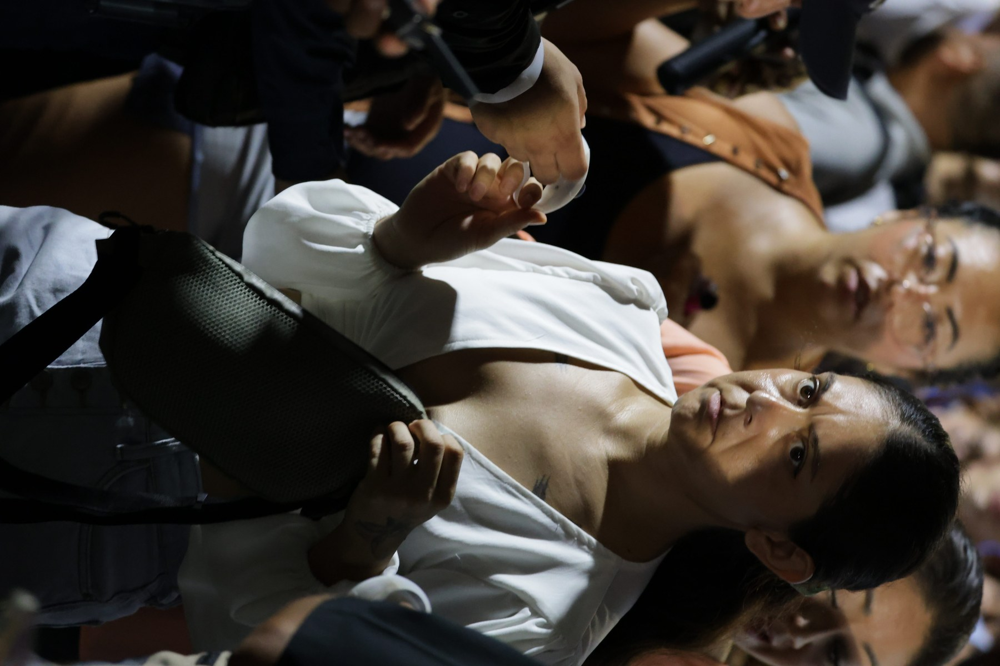

La anatomía invisible de un concierto en vivo
GRUPO FRONTERA · PRODUCCIÓN EN VIVO · 2025
Lo que el público ve dura dos horas.
Lo que no ve tarda meses.
Cada concierto es el resultado de centenares de decisiones: estructura, luz, sonido, logística, seguridad y el momento irrepetible en que todo converge.

Vista general del escenario antes del show. Banderas nacionales, estructura de truss, pantalla LED y los primeros asistentes formándose para entrar.

Decenas de moving heads y wash lights montados en la estructura de truss. Cada fixture programado para transformar el escenario en algo completamente diferente con cada canción.

El show abre con una DJ en consola Pioneer. Su set calienta al público y marca el tono de la noche, mientras la pantalla LED detrás despliega gráficos a todo color.
Un guitarrista entrega todo en la apertura. Ojos cerrados, cuerpo entregado al instrumento. La producción ya está en pleno funcionamiento: luces, monitores, cámaras.

La imagen que define un concierto: el artista de espaldas, miles de personas al frente. Todo lo que se construyó durante meses existe para que ocurra este segundo.

El acordeón y la guitarra al frente, un muro de llamas como telón. Los efectos de pirotecnia se sincronizan con los momentos climáticos de la música.

Contra un fondo de puntos azules que simulan un cielo nocturno, la silueta del artista en rojo. Una de las imágenes más poderosas del show: diseño lumínico que se convierte en arte.

La lluvia cae sobre el escenario pero el show continúa. El letrero de neón "FRONTERA" brilla en verde bajo la tormenta. Una imagen que resume la entrega total de la producción.

Miles de horas de trabajo. Decenas de equipos. Todo para que una persona, en medio de la multitud, viva algo que no va a olvidar.